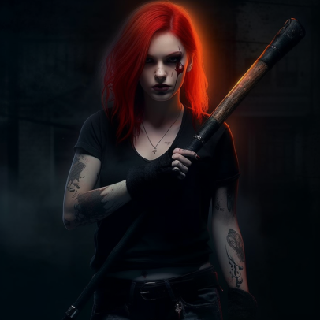
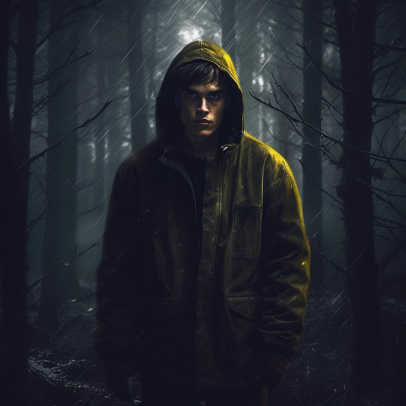
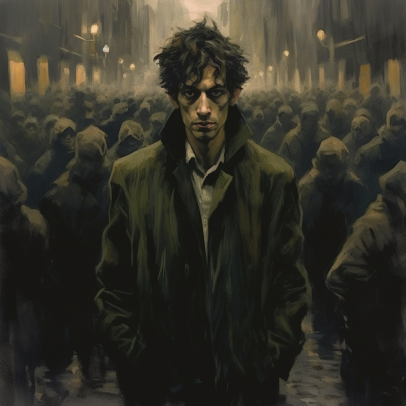
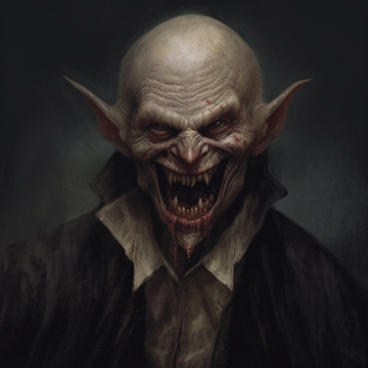
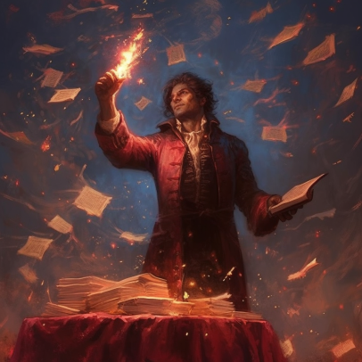
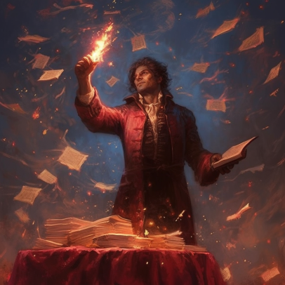
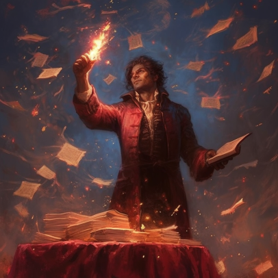
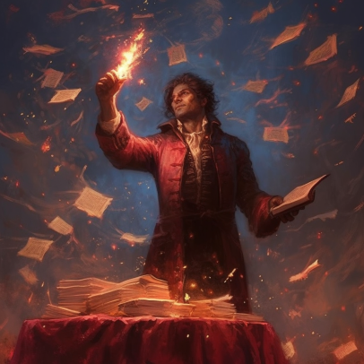

 



Os Brujah são um clã de radicais e encrenqueiros, Abraçando aqueles dispostos a colocar os outros nos lugares deles se isso for necessário. A maioria se vê como guerreiros por uma causa, e esses Rebeldes são guiados por suas paixões, força e dedicação aos seus ideais – sejam lá quais forem.
Mais próximos das feras que outros vampiros, os Gangrel se consideram o ápice entre os predadores. Essas Feras caçam nos ermos tão facilmente quanto na selva urbana, e nenhum outro clã de vampiros se compara à sua habilidade de resistir, sobreviver e prosperar em qualquer ambiente. Altamente territoriais, suas habilidades metamórficas conseguem fazer os próprios não vivos hesitarem.
Ridicularizados como Lunáticos pelos outros vampiros, o Sangue dos Malkavianos permite que eles percebam e prevejam verdades escondidas dos outros. Como os “sábios loucos” da poesia, suas perspectivas fraturadas vêm de enxergarem muito do mundo ao mesmo tempo, de entender profundamente demais e de sentir emoções que são simplesmente muito fortes para aguentar.
Os Nosferatu carregam sua maldição em seu exterior. Com seus corpos horrivelmente distorcidos e deformados pelo Abraço, eles espreitam pelos cantos da maioria das cidades, agindo como espiões e negociantes de informação. Usando animais e sua própria capacidade sobrenatural de se ocultarem, nada escapa aos olhos dos assim chamados “Ratos de Esgoto”.
Conhecidos por sua natureza sedutora, comportamento envolvente e graça eloquente ao ponto da obsessão, vampiros Toreador Abraçam artistas e amantes para suas fileiras, eternamente tentando mexer com seus próprios corações mortos. Sobrenaturalmente ágeis e charmosas, as Divas estão sempre à procura da próxima emoção, deixando um rastro de amantes e vítimas descartadas em seu caminho.
O arcano Clã Tremere foi uma casa de magos mortais que buscava a imortalidade, mas que encontrou apenas a não vida. Como vampiros, eles aperfeiçoaram as formas de dobrar o Sangue à suas vontades, empregando sua mágica para dominar e enfeitiçar tanto o mundo mortal quanto o vampírico. Seus poderes os tornam valiosos, mas poucos vampiros confiam em seus modos manipuladores.
Os Ventrue não são chamados de Clã dos Reis por nada. Cuidadosamente escolhendo sua progênie de que tenham familiaridade com o poder, a riqueza e a influência, os Ventrue se apresentam como aristocratas do mundo vampírico. É esperado que seus membros assumam o comando sempre que possível, e eles estão dispostos a enfrentar tempestades pela oportunidade de liderar a partir do front.